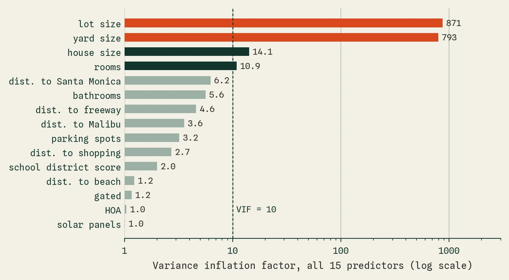
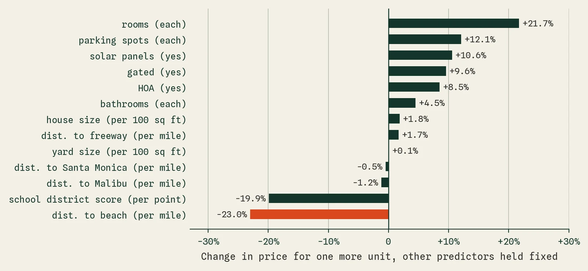

Malibu housing prices
| Tools | Python: pandas, statsmodels, sklearn |
|---|---|
| Data | 3,000 listings, 15 predictors, no missing values |
| Result | R² 0.853 (adjusted 0.852), held out R² 0.843 |
The question
What actually sets the price of a house in Malibu? I had 3,000 listings with 15 features each, from house size and room count to the distance from the beach. I wanted a model that explains price, keeps only the predictors that earn their place, and still works on listings it hasn't seen.
What I did
Fixed the skew first. Prices ran from $250,000 to $11.7 million, with a mean of $2.56 million and a median of $1.74 million. A skewness of 1.53 breaks the normality assumption ordinary least squares leans on, so I modeled log(price) instead. That brought the skewness to −0.18, and it means every coefficient reads as a percent change in price.
Checked for predictors that say the same thing. The variance inflation factor measures how well each predictor can be predicted by the others. Anything over 10 is a warning. Lot size and yard size came in at 871 and 793, which makes sense: big lots have big yards.

Removed predictors one at a time. I fit all 15, dropped the one with the largest p value above 0.05, refit, and repeated. Distance to the nearest shopping center went first (p = 0.46), then lot size (p = 0.28). The other 13 were all significant. Dropping lot size also solved the yard problem: in the final model the highest VIF is rooms at 10.9.
R² barely moved, from 0.8531 to 0.8530, while the F statistic rose from 1,155 to 1,333 and AIC fell from 3,482.38 to 3,480.09. The two predictors weren't adding anything. Then I held out a random 20% of listings, fit on the rest, and scored the held out set: R² 0.843, close to the in sample 0.853, so the model isn't just memorizing.
What I found
Distance to the beach is the biggest driver. Each extra mile from the water takes about 23% off the price, with everything else held fixed. Each extra room adds about 22%. Gated access, an HOA and solar panels each add between 8.5% and 10.6%.

What I'd do next
- Look harder at the school district score. Its coefficient is negative, about 20% less per point, which is the opposite of what you'd expect. I'd check how that variable was coded before trusting it.
- Deal with rooms and house size, which still overlap (VIF 10.9 and 7.9). Combining them or using ridge regression would be my next try.
- Use cross validation instead of a single 80/20 split, so the held out score doesn't depend on one random draw.